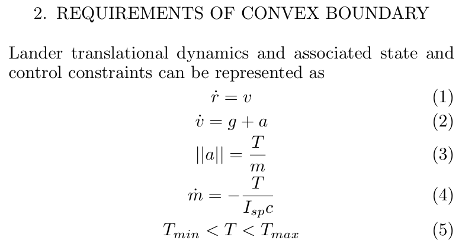

U R Rao Satellite Centre, ISRO · August 2019–July 2024
Spacecraft Autonomy & Guidance, Navigation and Control
Five years as a GNC scientist working across more than ten space missions, from lunar powered descent and human-spaceflight systems to solar-observation and Earth-observation spacecraft.
My work covered flight-algorithm development, nonlinear spacecraft dynamics, control design, Monte Carlo analysis, onboard decision logic, high-fidelity simulation, and stability assessment. Chandrayaan-3 was the central effort: I contributed to the GNC analysis behind its autonomous powered descent and co-authored technical work on guidance feasibility, real-time retargeting, landing strategy, and propellant-slosh interaction.

Chandrayaan-3: The Central Mission
Chandrayaan-3 demonstrated autonomous safe and soft landing near the lunar south-polar region on 23 August 2023. The U R Rao Satellite Centre team designed, analyzed, implemented, and realized the powered-descent GNC system that brought the lander from orbital velocity to touchdown.
The descent was deliberately staged: rough braking removed most of the approximately 1.68 km/s horizontal velocity, attitude hold prepared the sensor and propulsion geometry, fine braking drove the state toward the terminal corridor, and terminal descent completed hazard-aware vertical landing. Each phase balanced thrust and attitude limits, navigation accuracy, guidance convergence, failure tolerance, and propellant use.

Why the landing problem was hard
The lander had to autonomously absorb navigation error, thrust dispersion, mass uncertainty, actuator constraints, and late absolute-navigation updates. Under a sufficiently large state shift, the nominal target could become unreachable even though a safe landing remained possible at a nearby site.
That motivated a lightweight onboard answer to two questions: Is pinpoint landing still feasible? If not, what nearby target remains controllable? The resulting framework combined offline high-fidelity simulation with analytical onboard evaluation and target retargeting.

Powered-Descent GNC and Real-Time Retargeting
The technical thread began with my 2018 ISRO internship report on convex optimization, where I developed constrained boundary-fitting methods for lunar-lander feasibility data. The later IFAC work turned that foundation into a compact decision boundary for Chandrayaan-3 powered descent. Offline Monte Carlo rollouts classified states as guidance-feasible or infeasible; only the fitted boundary coefficients were needed onboard.


From feasibility checking to a flight-compatible policy
The later guidance formulation used an analytical polynomial acceleration profile with an offline-optimized time-to-go model. When the measured state fell outside the nominal controllable set, the retargeting logic projected the target toward the learned boundary instead of solving a full trajectory-optimization problem onboard. This preserved a transparent analytical guidance law while expanding the recoverable operating region.
The design was evaluated through dispersed-state rollouts, high-fidelity six-degree-of-freedom simulation, Monte Carlo campaigns, and comparison with flight telemetry. The flight trace remained within the preflight Monte Carlo performance envelope for the fine-braking phase.


Propellant Slosh Modeling and Control Stability
Powered descent couples rigid-body motion, liquid-engine forces, reaction-control thrusters, sensor feedback, and motion of partially filled propellant tanks. I co-authored work that represented the dominant liquid modes with time-varying equivalent pendulums inside a nonlinear three-axis, multi-tank spacecraft model. The model converts pendulum motion into disturbance force and torque acting on the lander.

Stability across a time-varying descent
Because propellant mass, pendulum frequency, damping, center of gravity, and inertia evolve during descent, stability was assessed through short-period frozen-time models rather than a single fixed plant. Center-of-percussion, rate-sensitivity, frequency-domain, and time-domain studies identified where control/slosh interaction was most critical.
The Chandrayaan-3 study then incorporated the nonlinear pulse-width/pulse-frequency modulator used to command on-off RCS thrusters. Describing-function and extended Nyquist analysis separated stable operation, bounded limit cycles, and unstable encirclements at the slosh frequency—an analysis that a purely linear loop model would miss.


Broader Mission Portfolio
Beyond Chandrayaan-3, my five years at ISRO included GNC, attitude-control, dynamics, simulation, and mission-analysis contributions across more than ten programs. Representative missions include Aditya-L1, India’s solar-observation mission; Gaganyaan, India’s human-spaceflight program; and INS-2B, where I served in an AOCS project-management role.
Chandrayaan-3
Powered-descent GNC, feasibility and retargeting, simulation, and slosh/control analysis.
Aditya-L1
Spacecraft autonomy, dynamics, control, and mission-analysis support.
Gaganyaan
High-reliability guidance, navigation, control, and simulation work.
INS-2B
Attitude and orbit-control project-management responsibilities.
Technical Reports and Publications
- Debajyoti Chakrabarti. Applications of Convex Optimization, ISRO internship report, 2018. [report]
- Debajyoti Chakrabarti, Suraj Kumar, Aditya Rallapalli, M. P. Rijesh, and G. V. P. Bharat Kumar. “Convex Decision Boundary Design for Guidance Feasibility Check During Powered Descent Phase of Chandrayaan-3 Lander,” IFAC-PapersOnLine, 2024. [paper]
- Suraj Kumar, Debajyoti Chakrabarti, Aditya Rallapalli, and G. V. P. Bharat Kumar. “Real-Time Retargeting-Based Robust Polynomial Guidance for Chandrayaan-3 Lunar Landing Mission,” Journal of Guidance, Control, and Dynamics, 2026. [paper]
- Suraj Kumar, Debajyoti Chakrabarti, Aditya Rallapalli, G. V. P. Bharat Kumar, and Ashok Kumar Kakula. “Real-Time Retargeting Using Controllability Boundary for Chandrayaan-3 Lunar Landing,” American Control Conference, 2026. [paper]
- Aditya Rallapalli, Suraj Kumar, G. V. P. Bharat Kumar, Chiranjib Guha Majumder, Debajyoti Chakrabarti, and M. P. Rijesh. “Landing Profile and Powered Descent Strategy for Chandrayaan-3,” 2024. [paper]
- Nivriti Priyadarshini, Debajyoti Chakrabarti, and Yajur Kumar. “Modelling of Propellant Slosh Dynamics and Its Application in Control Stability Study of Lunar Landing Mission,” AAS 22-651, 2022. [paper]
- Aditya Rallapalli, Debajyoti Chakrabarti, Nivriti Priyadarshini, M. P. Rijesh, and G. V. P. Bharat Kumar. “Stability Analysis Using Describing Function for Non-Linear Attitude Control Loop with Slosh Dynamics of Chandrayaan-3 Landing Mission,” Indian Control Conference, 2024. [paper]